NO WHITE WALLS is the inaugural Yale School of Art Annual exhibition curated by graduate students which
seeks to engage themes of collectivity and challenge the established history of the exhibition space in Western museums and galleries—a history dominated by the white cube formula As such, this exhibition will focus on artworks that stand free from the walls and incorporate sonic, tactile, and/or olfactory elements

Drawing from the lineage of
Rasquache art, the Tropicalia movement, Auto-construcción, and other decolonial approaches to art making, this exhibition will attempt to disrupt the legacy of an educational model influenced by the commercial expectations facing MFA students today

The curators of the exhibition aim to identify, engage, and uplift
MFA practitioners within the Northeast region that are not solely invested in producing objects intended for a particular market or economic exchange Through this refusal to engage in a market that capitalizes on the exploitation of MFA students, the exhibition will provide an alternative and temporary platform to practitioners that
move beyond siloed forms of knowledge keeping
SUBMISSIONS
Applicants must be currently enrolled in an MFA program located within one of the following states: Maine, New Hampshire, Vermont, Massachusetts, Connecticut, Rhode Island, New York, New Jersey, Pennsylvania, Maryland To submit your artwork for consideration, please fill out the
submission form Submissions will be accepted until January 1, 2022

The jurying period will take place during January 2022 and selected artists will be notified in February 2022

The exhibition is expected to be on view from March 28th–April 10th, 2022 For more information about the gallery and installation specifications, you may refer to our
installation guide
For any additional inquiries, contact us at
nowhitewalls@yale.edu
YALE MFA CURATORS
Salvador Andrade Arévalo (Painting & Printmaking ’22) Zoila Andrea Coc-Chang (Painting & Printmaking ’22)

Amartya De (Photography ’22) Miguel Gaydosh (Graphic Design ’22)

athena quispe (Painting & Printmaking ’22)

Mike Tully (Graphic Design ’22)
E.I.K., 32 Edgewood Gallery, Yale School of Art, New Haven, CT